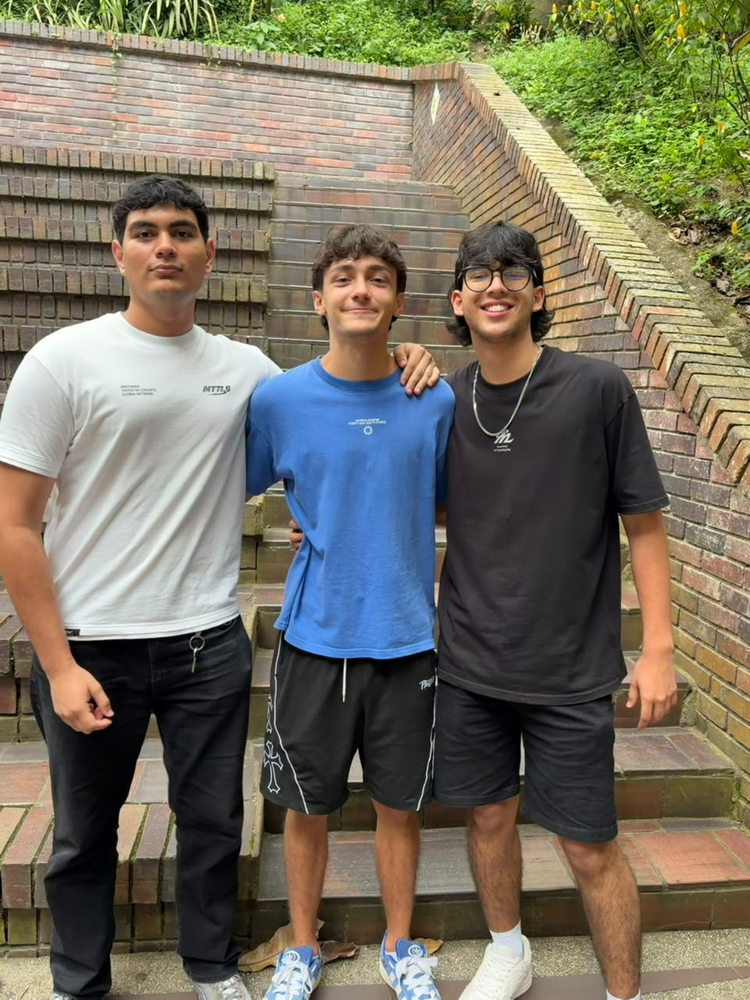

Juan Diego Ortiz Mora
Arquitectura y backend
Se encarga de que todo lo que no se ve funcione: la base de datos, el inicio de sesión y el despliegue. Si algo se cae, él ya lo estaba mirando.

Modern MiPortalU nació de una pregunta sencilla: ¿por qué hacer un trámite universitario tiene que costar tantos clics? Somos tres estudiantes de Ingeniería de Sistemas de la UNAB y decidimos rediseñar el portal desde cero: más claro, más rápido y pensado para usarse igual de bien en el celular que en el computador.
Reunimos en un solo lugar el horario, las notas, la proyección de cursos, los pagos, las horas libres y el carné. Cuidamos los detalles que casi nadie ve: textos con buen contraste, formularios que se pueden recorrer con el teclado y mensajes de error que dicen qué pasó y cómo arreglarlo.
Arquitectura y backend
Se encarga de que todo lo que no se ve funcione: la base de datos, el inicio de sesión y el despliegue. Si algo se cae, él ya lo estaba mirando.
Diseño de interfaces
Dibuja las pantallas antes de que existan y no descansa hasta que cada botón quede en el lugar donde uno lo busca por instinto.
Calidad y accesibilidad
Prueba cada pantalla como si fuera su peor usuario: en el celular, con el teclado y a las once de la noche. Lo que sobrevive a eso, se publica.